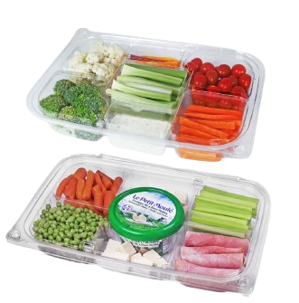
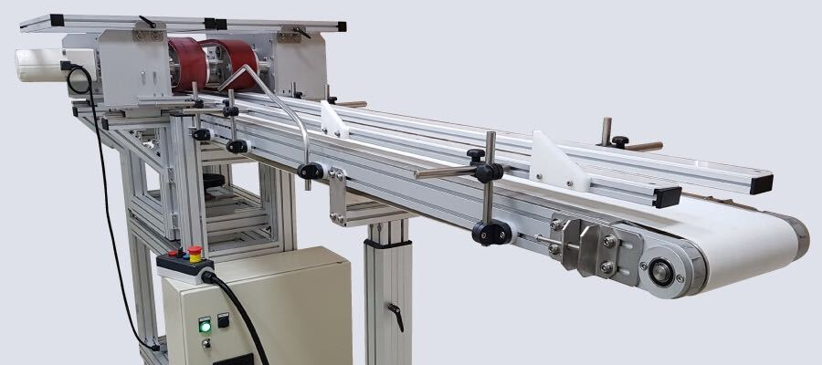

The patented button-locking technology for total peace of mind.
But-N-Loc is more than just a container—it's a comprehensive security system for your food products. Our patented design provides visible and tactile confirmation of freshness and safety, and requires the removal of the button-seal to open.
The heart of But-N-Loc is the unique button seal. Once closed, the container stays locked until the user detaches the security tab. This prevents "grazing" in retail environments and ensures that your customers are the first to open the package.

For high-volume processors, we offer the VPA-200 and other automated closing machines designed specifically for the But-N-Loc line.
